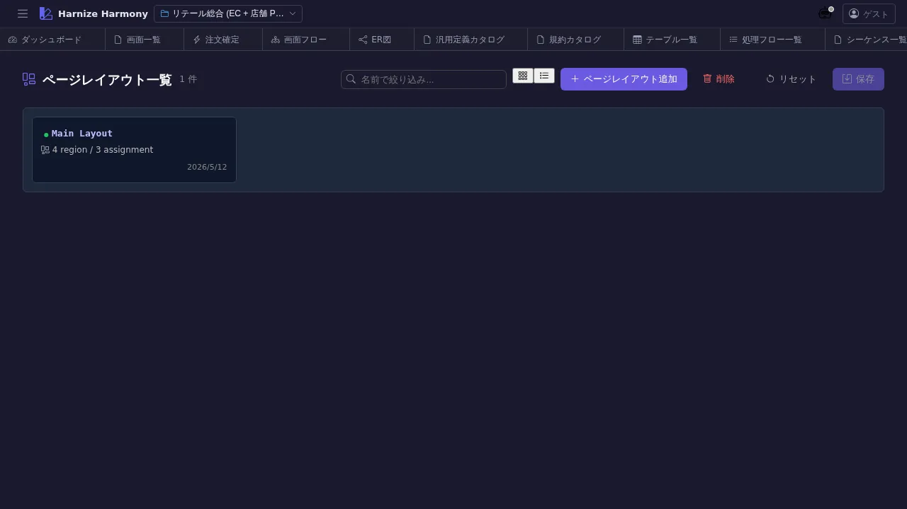

ページレイアウト一覧
対象画面:
PageLayoutListView(frontend/src/components/page-layout/PageLayoutListView.tsx) ルート:/w/:wsId/page-layout/list種別: シングルトンタブ
概要
ページレイアウト (PageLayout) を一覧する。共通ヘッダ / サイドバー / フッタを含む画面の枠組みを定義し、複数 Screen で共有する。RFC #1021 で導入されたモデル E (PageLayout 1 entity + Screen.purpose=gadget) に対応する一覧画面。
到達経路
- HeaderMenu → 「ページレイアウト」 → 「一覧」
- 画面一覧 (
/screen/list) で各 Screen のpageLayoutIdを選ぶ際の参照元 - 直接 URL:
/w/<wsId>/page-layout/list
画面構成

主要エリア
- ヘッダー — タイトル「ページレイアウト一覧」 + 件数 + 「追加」
- 一覧 — レイアウト名 / gadget 数 / 利用 Screen 数 / 成熟度 / 説明
主要操作
| 操作 | 手段 | 結果 |
|---|---|---|
| 新規作成 | 「ページレイアウトを追加」 | PageLayoutEditor 新タブ |
| 構造編集 | 行クリック → 「編集」 | /page-layout/edit/:id (メタ情報 + gadget slot) |
| ビジュアル編集 | 行クリック → 「デザイン」 | /page-layout/design/:id (PageLayoutDesigner) |
| 削除 | 右クリック → 「削除」 / Delete | 利用 Screen ありは警告 |
| rename | 右クリック → 「ID 変更…」 / F2 | RenameEntityDialog |
データ前提
- 空状態: 「ページレイアウトが未登録です」
- 意味のある状態: retail で
main-layout(1 件) — ヘッダ + サイドナビ + メインコンテンツの 3 領域
関連仕様書
docs/spec/page-layout.md— PageLayout 仕様 (#1021)docs/spec/list-common.md
関連 skill
- なし (直接編集中心、AI 生成 skill は将来検討)
既知の制約・注意
- gadget (
Screen.purpose=gadget) は/gadget/listで管理。本画面は レイアウト本体 のみ - 複数 PageLayout を持つプロジェクトの場合、Screen 側の
pageLayoutIdで各画面どちらを使うか指定